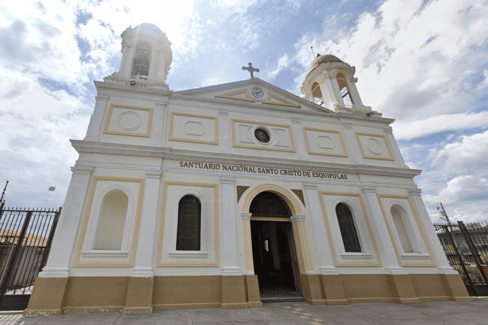
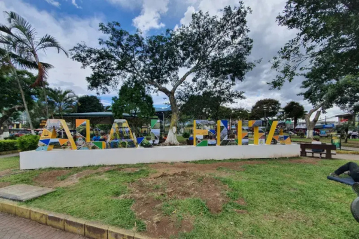

Sitios Emblematicos de Alajuelita

Iglesia

Cruz de Alajuelita

Alajuelita es un cantón lleno de historia, tradición y espíritu comunitario, ubicado al suroeste de San José. Rodeado por montañas y bendecido con vistas panorámicas del Valle Central, este rincón costarricense combina la calidez de su gente con una identidad cultural profundamente arraigada. Desde sus fiestas patronales hasta sus iniciativas sociales, Alajuelita vibra con una energía que refleja tanto sus raíces como su deseo de progreso.
🎶 ¡La música transforma vidas en Alajuelita! 🎶 La Escuela Municipal de Música de Alajuelita abre sus puertas a niños, jóvenes y adultos que deseen aprender, crecer y expresarse a través del arte.
🥇 ¡Alajuelita se mueve con energía y pasión! La Escuela Municipal de Deportes y Recreación abre sus espacios para que niños, jóvenes y adultos desarrollen sus habilidades físicas, sociales y emocionales a través del deporte.
🌌 ¡La juventud de Alajuelita tiene voz, talento y propósito! El Comité Cantonal de la Persona Joven te invita a formar parte de un movimiento que impulsa el arte, la cultura, el deporte, la inclusión y el liderazgo juvenil en nuestro cantón.
La Municipalidad de Alajuelita es el órgano de gobierno local encargado de promover el desarrollo integral, sostenible y participativo del cantón de Alajuelita, ubicado en la provincia de San José, Costa Rica. Nuestra misión es servir con transparencia, eficiencia y cercanía a la comunidad, impulsando proyectos que mejoren la calidad de vida de nuestros habitantes.